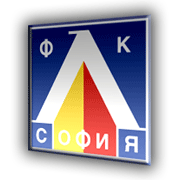

Основаването на футболен клуб Левски София
Основаването на футболен клуб Левски София През 1911 г. свой тим създава една група момчета от столичната VI прогимназия „Тодор Минков“, чиято сграда тогава се е намирала на ул. „Княз Борис I“, между ул. „Узунджовска“ и ул. „Парчевич“. Това са хлапета на по 12-14 години, които нямат дори истинска футболна топка. Но, както ще се окаже по-късно, имат много ентусиазъм и инат. Първоначално те са известни под името „Шестия тим“, но скоро ще си изберат собствено име! За съжаление, 1912 г. се оказва началото на две поредни национални катастрофи за България. От 5 октомври, когато е обявена т.нар. Балканска война, та чак до 27 ноември 1919 г., когато е подписан Ньойския мирен договор, довел до края на Първата световна война, България е почти непрекъснато във военно положение. Изключение прави периодът от 16 септември 1913 г. до 1 октомври 1915 г., когато страната ни е официално в мир, но трескаво се готви за участие в Първата световна война. Но именно през тези близо две години относителен мир се раждат и първите истински спортни клубове в София със своите структури, ръководства, тимове и най-вече започват да се играят и първите мачове.
През пролетта на 1914 г. споменатите момчета от „Шестия тим“ на столицата вече са ученици на II мъжка гимназия. Възрастта им е 15-17 години. Сградата на гимназията по това време се е намирала в района на булевардите „Витоша“ и „Патриарх Евтимий“. Още през 1905 г., когато в гимназията учители по физическо възпитание са били швейцарецът Даниел Бланшу и българинът Петър Радоев, за площадка за физическо възпитание на учениците са определени 12 дка на празно място на ъгъла на днешните булеварди „П.Славейков“ и „Витоша“. Мястото е наричано „Могилката“, тъй като в единия му край е имало неголямо възвишение. По проект на арх. Шамарджиев, теренът е подравнен и пригоден за спортни занимания. Възвишението се оказва стара тракийска могила, от която дори е извадена една голяма керамична делва, тя дълго време стои пред входа на гимназията. На 24 май 1914 г. на площадката на „Могилката“ се събират 20-30 ученици, предимно от II мъжка гимназия, които провеждат учредително събрание за образуване на официален спортен клуб. За съжаление, от това събрание не е останал никакъв официален документ. Затова сме принудени да се осланяме на спомените на някои от учредителите, изказани преди половин век при честването на 50-годишния юбилей на клуба. Ето какво казва един от учредителите Георги Манолов през 1964 г. пред в. „Народен спорт“: „Бяхме група приятели, 15-17-годишни, от квартала около „Патриарх Евтимий“, „Витоша“, „Цар Асен“ и съседните улици. Всички бяхме ученици, повечето от бившата втора мъжка гимназия в София. Ритахме топката (с дълги панталони, с обикновени обувки и горни ризи) най-често в обширния двор на бившия I-VI полк (сега градината на ъгъла на „Патриарх Евтимий“ и „Витоша“ ), зад който започваше просторно поле. Други ученически групи от махалата играеха на съседни удобни места. Постепенно в нас назря идеята да се организираме и да образуваме свой спортен клуб по подобие на тия, които вече съществуваха в София. Тази идея се осъществи окончателно на 24 май 1914 г. на „Могилката“ - игрището на втора мъжка гимназия (близо до гарнизонната фурна). Там се събрахме участниците от махленските групи и тържествено основахме нашия клуб. Постави се въпросът за името. Някои от участниците лансираха имена на прочути чужди клубове, които по онова време бяха популярни у нас. Тогава Борис Василев стана и предложи името на Апостола Левски. То се прие възторжено от всички. Това беше и кръщението на нашия клуб. формирахме три футболни тима, като за капитан на първия избрахме единодушно Спас Стоянов“.